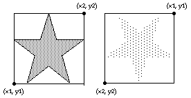

Draw.FillStar
Syntax
Draw.FillStar (x1, y1, x2, y2, Color : int)
Description
The Draw.FillStar procedure is used to draw a filled five pointed star on the screen bounded by a rectangle with bottom left and top right corners of (x1, y1) to (x2, y2) and filled using the specified Color. To get a star outlined in a different color, use Draw.FillStar with the Color parameter set to the fill color and then call Draw.Star with the Color parameter set to the border color. If y1 is greater than y2, then the star is drawn upside down.

Example
This program will draw two stars beside each other. The first will be outlined in color 1 and filled in color 2. The second star will be upside down and both filled and outlined in color 3.
View.Set ("graphics")
Draw.FillStar (0, 0, 100, 100, brightred)
Draw.Star (0, 0, 100, 100, green)
Draw.FillStar (150, 100, 250, 0, brightblue)
Details
The Draw.FillStar procedure is useful for drawing the American flag.
The screen must be in a "graphics" mode. See the View.Set procedure for details. If the screen is not in a "graphics" mode, an error will occur.
Status
Exported qualified.
This means that you can only call the function by calling Draw.FillStar, not by calling FillStar.
See also
View.Set, maxx, maxy and the various procedures in the Draw unit.